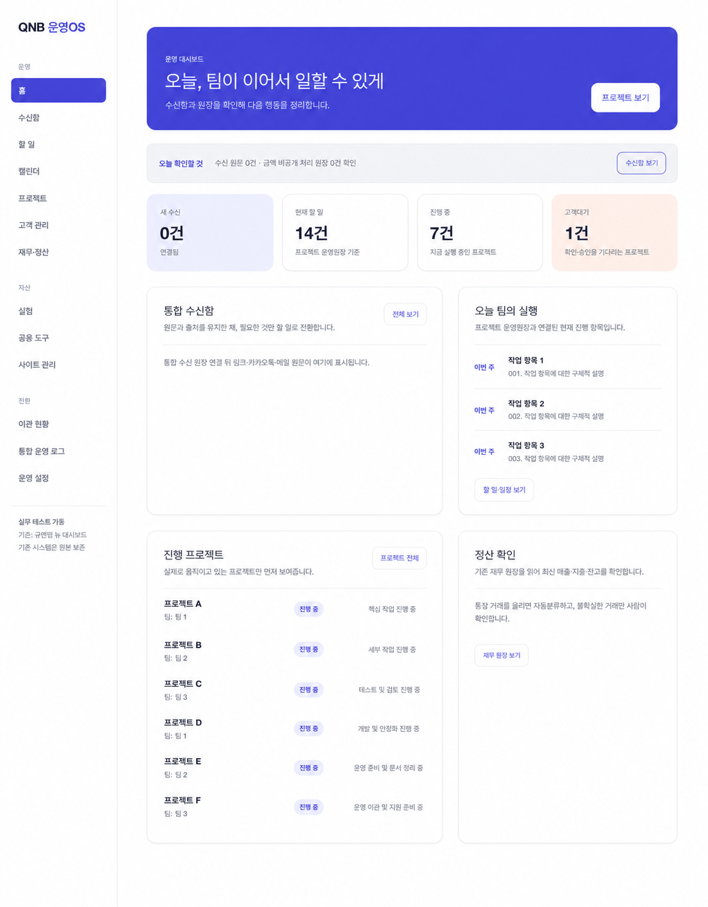

1. 카카오톡 수신 연결
채널 메시지를 중복 없이 통합 수신함에 남기는 중앙 수신 처리 코드입니다.
각 시스템의 실제 운영 코드 중 공개 가능한 부분만 비식별 처리해 분리했습니다. 고객명, 대화 원문, 매출·지출, 접속 주소와 인증값은 포함하지 않았습니다.
고객·프로젝트·정산 정보를 비식별 처리한 실운영 화면입니다.

이 페이지에는 공개 제품 화면이나 제품 링크를 넣지 않았습니다. 각 카드의 링크는 시스템 동작을 확인할 수 있는 비식별 코드 공개본입니다.
모든 코드와 화면은 고객·대화·매출·지출·계정·인증 정보를 제외한 범위입니다.